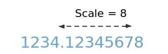

class: center, middle <a href="https://github.com/fp-tower/foundation"> <img src="../img/fp-tower/solid-color-logo.svg" alt="logo" style="width:800px;"/> </a> --- class: center, middle # Function as output --- # Functions as output <br> ```scala def format(scale: Int, number: Double): String ``` <br> .center[  ] --- # Functions as output <br> ```scala def format(scale: Int, number: Double): String ``` .forty-seven-left[ <br> ```scala format(2, 1234.12345678) // res0: String = "1234.12" format(5, 1234.12345678) // res1: String = "1234.12345" ``` ] .forty-seven-left[ ] --- # Functions as output <br> ```scala def format(scale: Int, number: Double): String = ... def format2D(number: Double): String = format(2, number) def format5D(number: Double): String = format(5, number) ``` <br> ```scala format2D(1234.12345678) // res2: String = "1234.12" format5D(1234.12345678) // res3: String = "1234.12345" ``` --- # Functions as output <br> ```scala def publishEvent( hostname: String, port : Int, topic : String, key : String, event : Event ): Unit ``` -- <br> ```scala def publishLocalEvent(topic: String, key: String, event: Event): Unit = publishEvent("localhost", 9000, topic, key, event) ``` ```scala def publishUatEvent(topic: String, key: String, event: Event): Unit = publishEvent("uat-acme.com", 12450, topic, key, event) ``` --- # Functions as output <br> ```scala def publishEvent( hostname: String, port : Int, topic : String, key : String, event : Event ): Unit ``` <br> .sixty-seven-left[ ```scala def publishLocalEvent = publishEvent("localhost", 9000) def publishUatEvent = publishEvent("uat-acme.com", 12450) ``` ] .twenty-seven-right[ ## Pseudocode ] --- class: small-code # Functions as output <br> .forty-seven-left[ ```scala def format(scale: Int, number: Double): String ``` ```scala format(2, 1234.12345678) // res5: String = "1234.12" ``` <br> ] .forty-seven-right[ ```scala def format(scale: Int): Double => String ``` ```scala format(2)(1234.12345678) // res7: String = "1234.12" ``` <br> ] -- ## Currying ```scala val function3: (Int , Int , Int) => Int val function3: Int => (Int => (Int => Int)) ``` --- class: small-code # Functions as output <br> .forty-seven-left[ ```scala def format(scale: Int, number: Double): String ``` ```scala format(2, 1234.12345678) // res9: String = "1234.12" ``` <br> ] .forty-seven-right[ ```scala def format(scale: Int): Double => String ``` ```scala format(2)(1234.12345678) // res11: String = "1234.12" ``` <br> ] ## Currying ```scala val function3: (Int , Int , Int) => Int val function3: Int => Int => Int => Int ``` --- # Partial function application <br> ```scala def format(scale: Int): Double => String ``` <br> ```scala val format2D = format(2) val format5D = format(5) ``` -- <br> ```scala format2D(1234.12345678) // res12: String = "1234.12" format5D(1234.12345678) // res13: String = "1234.12345" ``` --- # Syntax ## Uncurried ```scala def format(scale: Int, number: Double): String ``` ## Curried ```scala def format(scale: Int)(number: Double): String def format(scale: Int): Double => String val format: Int => Double => String ``` --- # Conversion (Currying) <br> ```scala def format(scale: Int, number: Double): String ``` -- <br> ```scala format _ // res15: (Int, Double) => String = <function2> ``` -- <br> ```scala (format _).curried // res16: Int => Double => String = scala.Function2$$Lambda$11258/0x000000010321e840@494b41cf ``` --- # Summary <br> .large[ * A curried function can be partially applied * Only works from left to right arguments * One more thing ... ] --- class: center, middle # Exercise 2: Functions as output `exercises.function.FunctionExercises.scala`